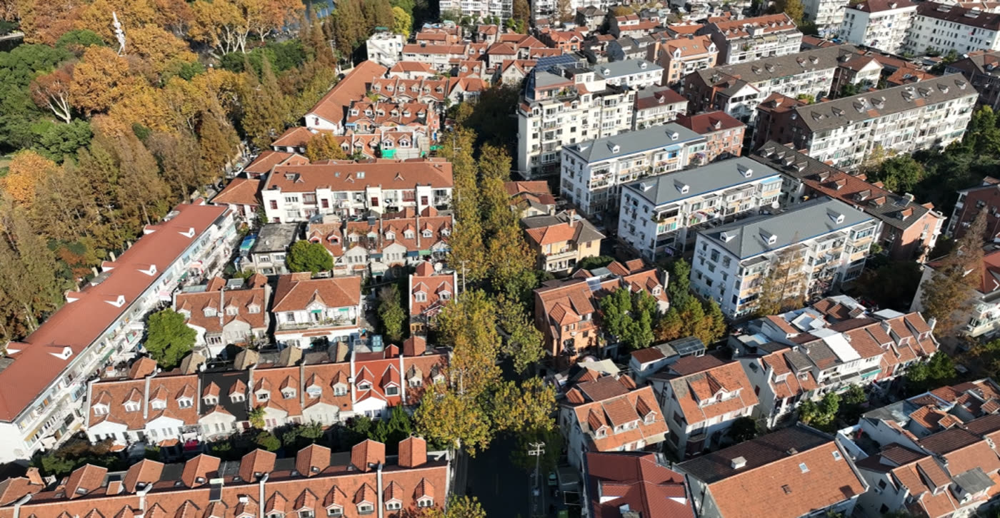
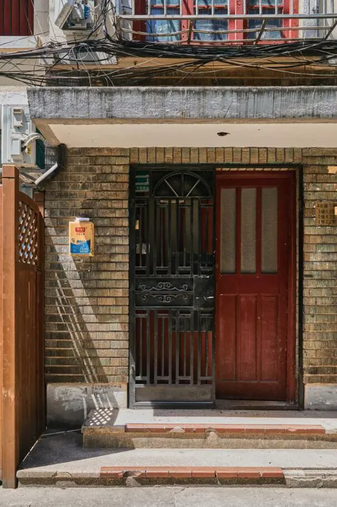
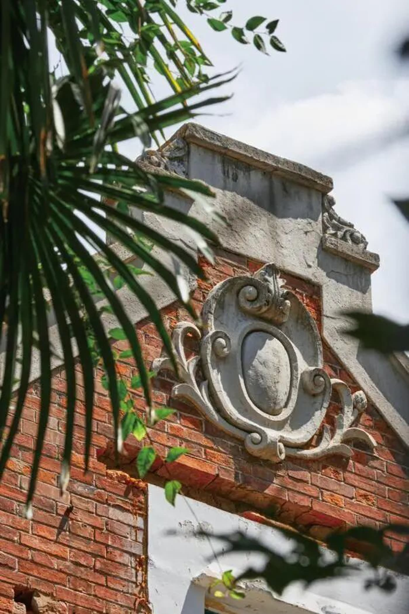
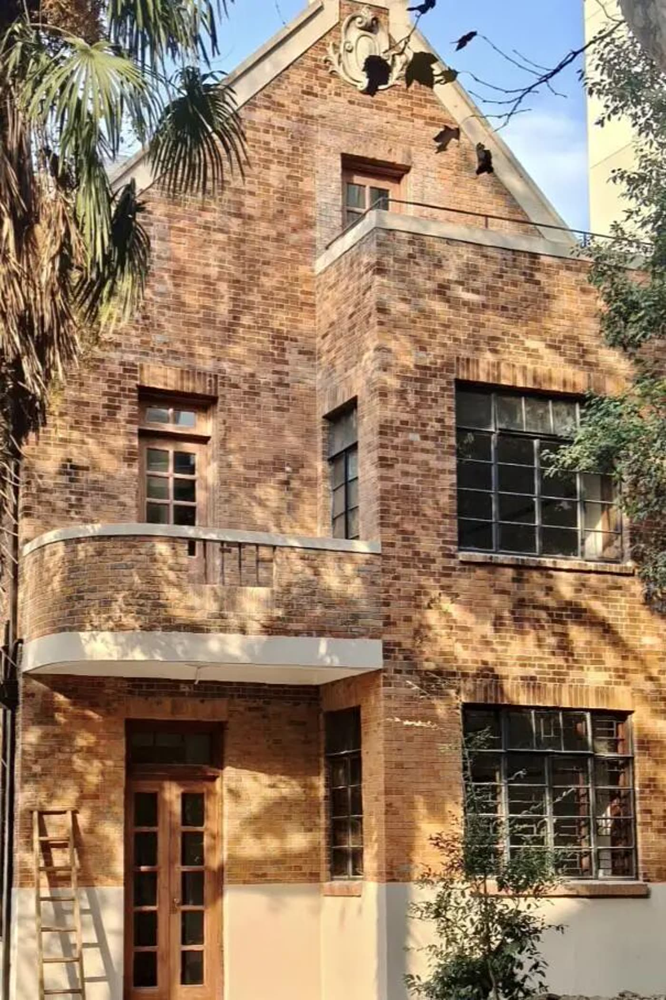
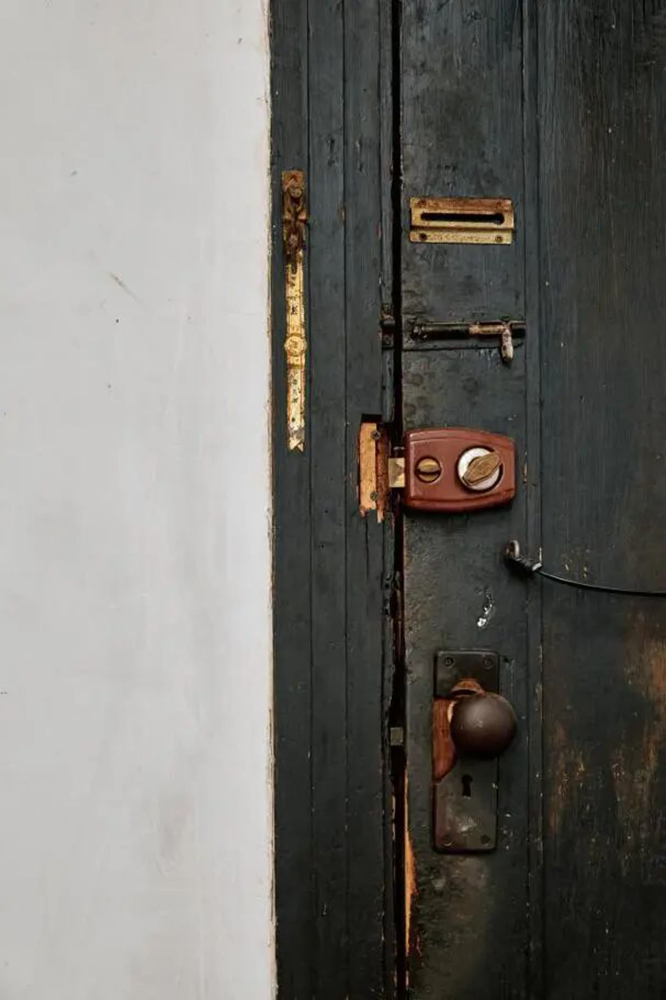
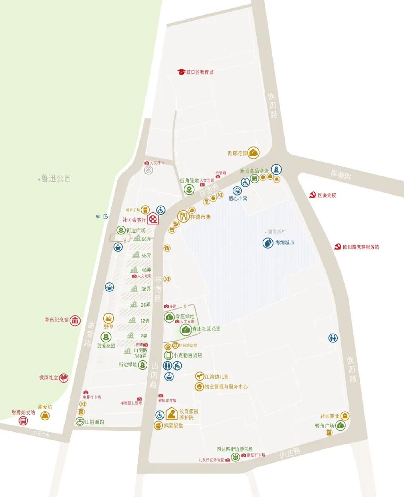

上海虹口欧阳路街道255、254片区城市更新：“针灸织补”式微更新与“甜蜜街区”人文环线
- 发布机关
- 上海市虹口区欧阳路街道办事处
- 发布日期
- 2026-04-03
- 效力状态
- 实践报道
- 行政层级
- 地方级
- 地 区
- 上海
- 资料来源
- 上海城市空间艺术季（微信公众号）
上海城市空间艺术季2026年4月3日报道虹口区欧阳路街道255、254片区城市更新：2024年列入上海首批老旧片区更新试点，为虹口区首个以街道作为建设主体的系统性城市更新工程，采取不大拆大建的“针灸织补”方式。更新规模70多处，含修缮12条弄巷、8幢房屋、建成1.45公里慢行区、拓展9处公共空间、焕新5座口袋公园、打造1处烟火市集、焕新43家小店、提升260米沿街店招店牌、打造13处休闲文化节点，并延伸出“甜蜜街区”人文环线。属媒体报道与实践报道，非政策原文。
现场照片
以下为来源发布方发布的现场照片，版权归原发布方/摄影者所有，本站仅作索引展示；点击可跳转原始链接。






【原文标题】趣发现丨欧阳路“甜蜜”街区正悄悄变美，甜度刚刚好 【发布公众号】上海城市空间艺术季 【发布时间】2026-04-03（页面变量 ct=1775188800，对应北京时间 2026-04-03 12:00） 【材料性质】实践报道 / 项目纪实（媒体报道，非政策原文、非批复文件） 【原文链接】https://mp.weixin.qq.com/s?__biz=MzAwMDU1ODY4MA==&mid=2650415529&idx=1&sn=454afea01d2069232a4c5cda7d6d8069&chksm=836679aeeaa4fa06384fc78586edf56db02b2afd2a66c01a034995ba0723611d6f3c5c35b959&scene=27 【取数说明】正文逐字取自存档 data/_inc_raw/prep_wx_body.txt（由 data/_inc_raw/wechat_mp.html 的 js_content 切片得到），仅删除开头 js_content 标签与结尾分享提示语，并把换行统一为 LF，未改写文字。
【原文项目信息（逐字录）】 更新规模：70多处（修缮12条弄巷、8幢房屋，建成1.45公里慢行区，拓展9处公共空间，焕新5座口袋公园，打造1处烟火市集，焕新43家小店，提升260米沿街店招店牌，打造13处休闲文化节点） 实施主体：上海市虹口区欧阳路街道办事处 设计单位：上海市政工程设计研究总院（集团）有限公司 顾问团队：上海山水秀建筑设计顾问有限公司、上海明悦建筑设计事务所有限公司、上海显时文化传播有限公司、上海希珥文化发展有限公司 撰文、摄影：陈敏
【正文（逐字录自原文）】 不拆房、不大动、只做“微创手术” 这片甜蜜街区悄悄升级 都市烟火气，社区新文艺 这才是上海老城更新最暖的样子 欧阳路街道255、254片区城市更新 百年街区，一场甜蜜微更新正在发生 欧阳路街道255、254片区更新项目鸟瞰 虹口欧阳路，藏着上海最地道的里弄生活。 这里地处山阴路历史风貌区，祥德路、山阴路、甜爱路交织成网，一步一景都是故事。鲁迅公园的艺文气息、甜爱路的浪漫传说、老弄堂里的烟火日常，都是上海老城厢最温柔的切片。 一步一景，都是老城厢最温柔的切片 但岁月流转，老街区也慢慢“累了”：房子老、屋顶漏、管道堵；路太窄、人行道挤、老人走路不安全；公共空间少，想歇脚、想遛弯都没地方；沿街店招店牌乱，杂物堆放挤压街道空间。 2024年，上海成为首批中央财政支持城市更新行动城市。欧阳路街道255、254片区经过全面“城市体检”，被正式列入上海首批老旧片区更新试点，同时也是虹口区首个以街道作为建设主体的系统性城市更新工程。 居民盼变好，又舍不得离开熟悉的家，一场以“针灸织补”为核心、不大拆大建的小微更新，就此拉开序幕。 欧阳路街道255、254片区更新项目总图 城市体检，读懂老街区的真实需求 亲切邀请市民体验 这次更新到底怎么干？思路超实在：居民需要什么，就改什么。 不搞花架子、不做表面功，所有改造围绕四件事——基础设施先补齐，生活更方便；公共空间再盘活，街区有温度；历史风貌要保护，老城有记忆；社区活力得激活，日子有滋味。 从设计到施工，从街巷到住区内部，街道、设计师、居民、商户一起参与，真正把更新做成“大家的事”。 这轮微更新没有惊天动地的工程，全是精准、温柔、见效快的“针灸式做法”。哪里不舒服改哪里，哪里缺东西补哪里，一点点把老街区的短板补齐、亮点擦亮。 整体翻新十几条老旧巷弄，平整路面、规整管线、修复墙面，让弄堂干净又安全；拆违腾地，把占用的空间还给居民，变成绿地、步道和休息点；优化慢行系统，拓宽人行道、提升路口安全，打造舒适的步行环境；修缮老房子，解决漏水、管道老化等居住痛点；提升沿街风貌，统一且有特色的店招，修复历史建筑立面，保留海派韵味；打造口袋花园、生境花园，让居民推窗见绿、转角遇美；升级便民服务，新增养老空间、休息驿站、便民点位，让15分钟社区生活圈更完善；植入文化场景，让街区可阅读、可体验、可停留，真正“活”起来。 这些动作叠加在一起让整条街悄悄变了样。 祥德路95号祥徳市集更新前是一排老旧小店铺 更新后的祥德市集既保留了市井烟火气，又引入新型商业业态，为街区注入新的发展活力 山阴路277号长寿和庭养护园更新前 更新后的养护园建筑立面风格简约，后退空间平整，无障碍设施完善，还增加了座椅 针灸式微更新，小切口带来大变化 山阴路的围墙上，增添跳跃的猫咪艺术装置 01 一弄一策，老弄堂变回“小时候的样子” 祥德路48弄、58弄、66弄是这次更新中最有代表性的里弄。几十年的老房子里，住着一代又一代居民，大家对这里感情很深，但环境问题也确实头疼。 这次更新并没有“一刀切”，而是一弄一策、量身定制。用传统工艺修补墙面，还原老弄堂质感；重新铺路面，走路不再磕磕绊绊；把空中凌乱的管线隐藏起来，视线立刻清爽；清理违建堆物，腾出空间放上座椅、装上路灯；再点缀绿植，让老弄堂既有岁月感，又干净整洁。 居民都说：味道没变，环境好了！老人坐着聊天，孩子放心奔跑，邻里更愿意出门打招呼。一条安静的老弄堂，重新找回了最温暖的烟火气。 祥德路48弄入口铁艺与“祥徳”标志 弄堂内环境整治与景观艺术 祥德路66弄入口 弄堂里围墙的细致工艺 66弄还是通往甜爱路的隐藏小道，很多市民喜欢从这里抄近路 弄堂口低调而点睛的灯光设置 山阴路343弄小区入口围墙设置休憩点 夜晚围墙上的窗户变身视频宣传窗口 02 小转角改造，解决多年出行难题 祥德路与欧阳路路口，曾是居民最“揪心”的地方。路窄、车多、人行道挤，老人买菜、孩子上学都要小心翼翼，高峰期更是堵得慌。 改造后完全不一样了！项目团队压缩不必要的车行空间，把路让给行人；拓宽人行道近 200㎡，路面重新铺装，干净又平整；增加绿化和标识，提升安全感与颜值。 现在，推婴儿车不用侧身，老人走路不用慌，一个不起眼的小转角，直接变成街区里最安全、最舒服的城市客厅。 祥德路、欧阳路口更新前 更新后，路口拓宽步行空间，设置了转角标志景观 沿街商铺一角保留了修车点 祥德路、欧阳路路口夜景与台阶照明 路口与小区衔接处设置了休憩点 03 口袋花园+社区会客厅，居民最爱来 老城区最缺什么？答案一定是：能歇脚、能聊天、能放松的小天地。 欧阳路街道做了一件超聪明的事：把边角地、拆违空地、闲置老房子，全部盘活成公共客厅。 一共打造了5处口袋花园、生境花园，不大，但精致。有花有草、有座椅有灯光，春天看花、夏天乘凉、秋天晒太阳、冬天聊天，真正实现“推窗见绿、出门入园”。 祥德路144号，欧耶花园 花园里的小马艺术装置 花园镂空围墙与廊架 欧耶花园夜景 祥德路街边广场 祥德路街边广场周边主题墙绘 棒棒糖艺术装置与墙绘 山阴路343弄小区，青庄绿地 青庄绿地红砖座椅设施 虹口区绿化管理中心打造的四达路街边游乐场 小象艺术装置 街边游乐场的翻翻墙和霓虹灯涂鸦墙 街边游乐场的座椅设施 甜爱花园 野草空间（尚在改造中） 更暖心的是社区会客厅。原本闲置的老房子，改造后变成居民议事空间、文化活动角、便民服务站……温馨又实用，一开放就成了全街区人气最高的地方。 从“没地方去”到“愿意常去”，微更新用最小的空间，实现了最大的民生幸福。 祥德路76弄1号社区会客厅 欧耶花园里的历史建筑修缮后做主题展，讲述街区更新故事 04 甜爱路同步焕新！浪漫老街更有氛围感 大家最爱的甜爱路，也在这次更新过程中悄悄变美。 没有大拆大建，没有过度商业化，只是温柔“打扮”一番：修补路面、优化人行道、提升绿化、修复围墙、升级艺术标识，让这条“爱情马路”更整洁、更舒适、更治愈。 散步、拍照、约会、打卡，甜爱路还是上海最温柔的模样。 浪漫加码！甜爱路越变越好看 甜爱路电影打卡墙 艺术墙绘与便民裁缝店融合 “欧阳有艺思”艺术展，晾衣架变身展架，衣服夹变身座椅 公交站“甜爱始发站” 鲁迅公园的微风礼堂 05 甜蜜街区的“人文艺术”密码 在微更新的基础上，欧阳路街道进一步立足山阴路历史风貌区和“甜爱”流量优势，持续打造“甜蜜街区”人文环线——将街区内分散的历史文化资源、闲置低效空间与社区公共需求进行创造性链接，串联成一条有温度的人文动线，从单一的爱情象征，拓展为涵盖邻里亲情、社区温情、历史情怀的广义“仁爱”文化符号。 “点”上精准打磨，邻里客厅、甜爱花园、野草空间，每一处都是文化锚点；“线”上有机串联，将祥德路主题巷弄、山阴路沿线开放空间连成建筑可阅读、街道可漫步的动线；“面”上融合营造，以“甜蜜”文化统合节点、巷弄与主要道路沿线的立面展陈，将碎片化空间整合为文化可感知、社区有温度的“人文环线”。 欧阳甜蜜街区一日游地图 “欧阳有艺思”猫咪艺术装置 艺术装置《沪语冰片墙》与《时代之声》 夜晚街道空间也有很多光影打卡的乐趣 围绕“甜爱”文化内核，街区策划并持续举办“甜蜜市集”“都市樱花节”“社区文化节”等系列活动。空间预约共享机制鼓励社区社会组织、文艺团队、志愿者在此开展活动，使环线节点成为居民文化创造、交流与展示的常态化平台。 欧阳在街区中开展迎春city walk、萌宠闹弄堂、2026虹口都市樱花节、“樱你而来、霓裳同游”主题青年交友派对等丰富的活动 老街新生，藏着城市最温柔的心意 温暖的弄堂口 城市更新，不是把老房子推倒重来，而是让生活在这里的人，过得更安心、更舒心、更有尊严。 欧阳路街区的实践，从微更新到人文环线，从硬件改善到文化营造，不追求轰轰烈烈的颠覆，只做好点点滴滴的温柔，既解决了基础设施薄弱、公共空间不足、居住品质不高等民生痛点，又守住了里弄肌理、海派风貌与社区烟火气。 巷弄可触，是生活的温度； 时光可读，是城市的记忆。 樱花已开，快来甜蜜街区走走看看，感受这独一份的幸福。 留言互动区： 你有没有发现家门口的新变化？ 你最喜欢欧阳路的哪一处微更新？ 欢迎在留言区告诉我们～ 你心中最暖的欧阳瞬间，等你来分享！ 虹口区欧阳路街道255、254片区城市更新 项目位置：上海市虹口区欧阳路街道 更新规模：70多处（修缮12条弄巷、8幢房屋，建成1.45公里慢行区，拓展9处公共空间，焕新5座口袋公园，打造1处烟火市集，焕新43家小店，提升260米沿街店招店牌，打造13处休闲文化节点） 实施主体：上海市虹口区欧阳路街道办事处 设计单位：上海市政工程设计研究总院（集团）有限公司 顾问团队：上海山水秀建筑设计顾问有限公司、上海明悦建筑设计事务所有限公司、上海显时文化传播有限公司、上海希珥文化发展有限公司 撰文、摄影：陈敏 *部分图片来源于欧阳路街道、微信公众号“上海虹口”“虹口欧阳”等。
【核验与边界说明】
- 本条为媒体报道，收录状态标为“实践报道”，不代表政策文本，也不构成行政许可或成效认定。
- 原文所述“2024年，上海成为首批中央财政支持城市更新行动城市”“255、254片区……经过全面城市体检，被正式列入上海首批老旧片区更新试点”“虹口区首个以街道作为建设主体的系统性城市更新工程”等均为报道方表述；本库未取得市、区两级立项或批复文件原件，按原文照录并标注出处。
- 原文注明“部分图片来源于欧阳路街道、微信公众号‘上海虹口’‘虹口欧阳’等”，原始素材分布于多个主体，本库仅以本公众号发布页作为公开核验入口。
- 与本库条目143《上海虹口欧阳路文化街区更新》为不同对象：本条是255、254片区老旧片区更新试点的“针灸织补”式微更新；143是2018年以来三期建设的欧阳路文化街区及其2025年1月点亮仪式。青年报原文（见143条所附段落）提到“文化街区与甜蜜街区所涉的254、255地块被纳入了全市城市更新示范项目”，两条互为印证但对象不同，故分别收录。